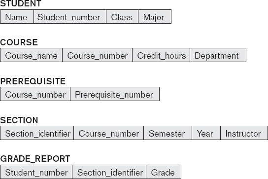
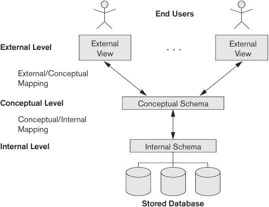
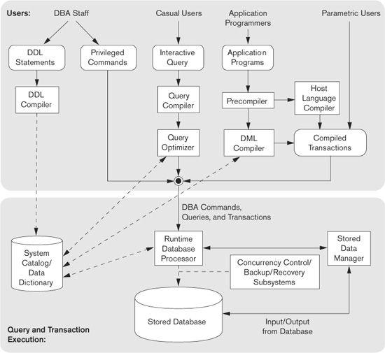
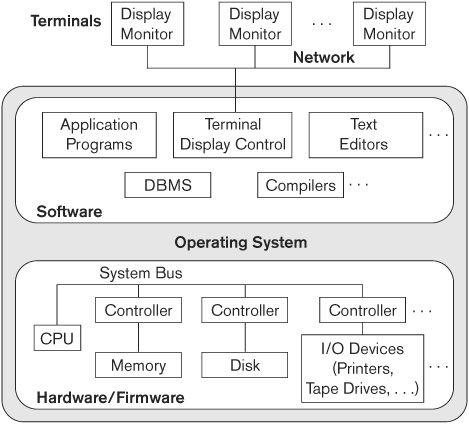
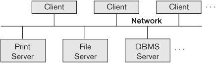
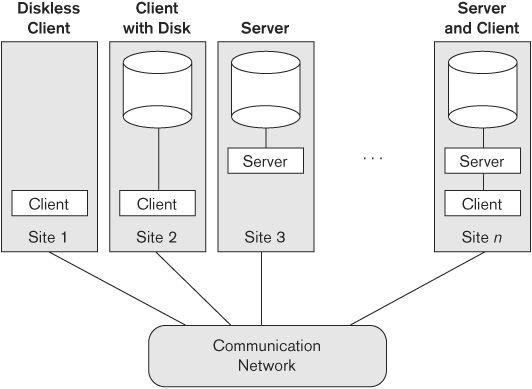
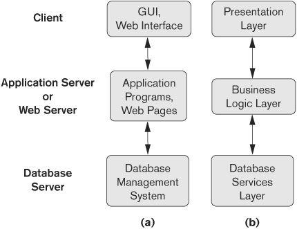
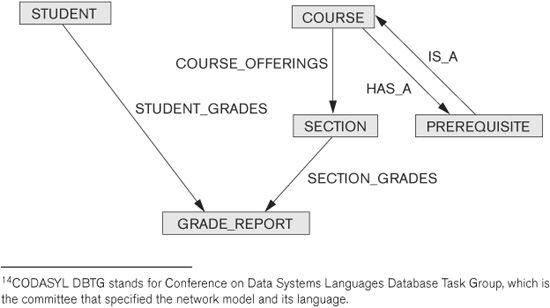

chapter 2
Database System Concepts and Architecture
The architecture of DBMS packages has evolved from the early monolithic systems, where the whole DBMS software package was one tightly integrated system, to the modern DBMS packages that are modular in design, with a client/server system architecture. This evolution mirrors the trends in computing, where large centralized mainframe computers are being replaced by hundreds of distributed workstations and personal computers connected via communications networks to various types of server machines—Web servers, database servers, file servers, application servers, and so on.
In a basic client/server DBMS architecture, the system functionality is distributed between two types of modules.1 A client module is typically designed so that it will run on a user workstation or personal computer. Typically, application programs and user interfaces that access the database run in the client module. Hence, the client module handles user interaction and provides the user-friendly interfaces such as forms- or menu-based GUIs (graphical user interfaces). The other kind of module, called a server module, typically handles data storage, access, search, and other functions. We discuss client/server architectures in more detail in Section 2.5. First, we must study more basic concepts that will give us a better understanding of modern database architectures.
In this chapter we present the terminology and basic concepts that will be used throughout the book. Section 2.1 discusses data models and defines the concepts of schemas and instances, which are fundamental to the study of database systems. Then, we discuss the three-schema DBMS architecture and data independence in Section 2.2; this provides a user’s perspective on what a DBMS is supposed to do. In Section 2.3 we describe the types of interfaces and languages that are typically provided by a DBMS. Section 2.4 discusses the database system software environment.
Section 2.5 gives an overview of various types of client/server architectures. Finally, Section 2.6 presents a classification of the types of DBMS packages. Section 2.7 summarizes the chapter.
The material in Sections 2.4 through 2.6 provides more detailed concepts that may be considered as supplementary to the basic introductory material.
2.1 Data Models, Schemas, and Instances
One fundamental characteristic of the database approach is that it provides some level of data abstraction. Data abstraction generally refers to the suppression of details of data organization and storage, and the highlighting of the essential features for an improved understanding of data. One of the main characteristics of the database approach is to support data abstraction so that different users can perceive data at their preferred level of detail. A data model—a collection of concepts that can be used to describe the structure of a database—provides the necessary means to achieve this abstraction.2 By structure of a database we mean the data types, relationships, and constraints that apply to the data. Most data models also include a set of basic operations for specifying retrievals and updates on the database.
In addition to the basic operations provided by the data model, it is becoming more common to include concepts in the data model to specify the dynamic aspect or behavior of a database application. This allows the database designer to specify a set of valid user-defined operations that are allowed on the database objects.3 An example of a user-defined operation could be COMPUTE_GPA, which can be applied to a STUDENT object. On the other hand, generic operations to insert, delete, modify, or retrieve any kind of object are often included in the basic data model operations. Concepts to specify behavior are fundamental to object-oriented data models (see Chapter 11) but are also being incorporated in more traditional data models. For example, object-relational models (see Chapter 11) extend the basic relational model to include such concepts, among others. In the basic relational data model, there is a provision to attach behavior to the relations in the form of persistent stored modules, popularly known as stored procedures (see Chapter 13).
2.1.1 Categories of Data Models
Many data models have been proposed, which we can categorize according to the types of concepts they use to describe the database structure. High-level or conceptual data models provide concepts that are close to the way many users perceive data, whereas low-level or physical data models provide concepts that describe the details of how data is stored on the computer storage media, typically magnetic disks. Concepts provided by low-level data models are generally meant for computer specialists, not for end users. Between these two extremes is a class of representational (or implementation) data models,4 which provide concepts that may be easily understood by end users but that are not too far removed from the way data is organized in computer storage. Representational data models hide many details of data storage on disk but can be implemented on a computer system directly.
Conceptual data models use concepts such as entities, attributes, and relationships. An entity represents a real-world object or concept, such as an employee or a project from the miniworld that is described in the database. An attribute represents some property of interest that further describes an entity, such as the employee’s name or salary. A relationship among two or more entities represents an association among the entities, for example, a works-on relationship between an employee and a project. Chapter 7 presents the Entity-Relationship model—a popular high-level conceptual data model. Chapter 8 describes additional abstractions used for advanced modeling, such as generalization, specialization, and categories (union types).
Representational or implementation data models are the models used most frequently in traditional commercial DBMSs. These include the widely used relational data model, as well as the so-called legacy data models—the network and hierarchical models—that have been widely used in the past. Part 2 is devoted to the relational data model, and its constraints, operations and languages.5 The SQL standard for relational databases is described in Chapters 4 and 5. Representational data models represent data by using record structures and hence are sometimes called record-based data models.
We can regard the object data model as an example of a new family of higher-level implementation data models that are closer to conceptual data models. A standard for object databases called the ODMG object model has been proposed by the Object Data Management Group (ODMG). We describe the general characteristics of object databases and the object model proposed standard in Chapter 11. Object data models are also frequently utilized as high-level conceptual models, particularly in the software engineering domain.
Physical data models describe how data is stored as files in the computer by representing information such as record formats, record orderings, and access paths. An access path is a structure that makes the search for particular database records efficient. We discuss physical storage techniques and access structures in Chapters 17 and 18. An index is an example of an access path that allows direct access to data using an index term or a keyword. It is similar to the index at the end of this book, except that it may be organized in a linear, hierarchical (tree-structured), or some other fashion.
2.1.2 Schemas, Instances, and Database State
In any data model, it is important to distinguish between the description of the database and the database itself. The description of a database is called the database schema, which is specified during database design and is not expected to change frequently.6 Most data models have certain conventions for displaying schemas as diagrams.7 A displayed schema is called a schema diagram. Figure 2.1 shows a schema diagram for the database shown in Figure 1.2; the diagram displays the structure of each record type but not the actual instances of records. We call each object in the schema—such as STUDENT or COURSE—a schema construct.
A schema diagram displays only some aspects of a schema, such as the names of record types and data items, and some types of constraints. Other aspects are not specified in the schema diagram; for example, Figure 2.1 shows neither the data type of each data item, nor the relationships among the various files. Many types of constraints are not represented in schema diagrams. A constraint such as students majoring in computer science must take CS1310 before the end of their sophomore year is quite difficult to represent diagrammatically.
The actual data in a database may change quite frequently. For example, the database shown in Figure 1.2 changes every time we add a new student or enter a new grade. The data in the database at a particular moment in time is called a database state or snapshot. It is also called the current set of occurrences or instances in the database. In a given database state, each schema construct has its own current set of instances; for example, the STUDENT construct will contain the set of individual student entities (records) as its instances. Many database states can be constructed to correspond to a particular database schema. Every time we insert or delete a record or change the value of a data item in a record, we change one state of the database into another state.

Figure 2.1
Schema diagram for the database in Figure 1.2.
The distinction between database schema and database state is very important. When we define a new database, we specify its database schema only to the DBMS. At this point, the corresponding database state is the empty state with no data. We get the initial state of the database when the database is first populated or loaded with the initial data. From then on, every time an update operation is applied to the database, we get another database state. At any point in time, the database has a current state.8 The DBMS is partly responsible for ensuring that every state of the database is a valid state—that is, a state that satisfies the structure and constraints specified in the schema. Hence, specifying a correct schema to the DBMS is extremely important and the schema must be designed with utmost care. The DBMS stores the descriptions of the schema constructs and constraints—also called the meta-data—in the DBMS catalog so that DBMS software can refer to the schema whenever it needs to. The schema is sometimes called the intension, and a database state is called an extension of the schema.
Although, as mentioned earlier, the schema is not supposed to change frequently, it is not uncommon that changes occasionally need to be applied to the schema as the application requirements change. For example, we may decide that another data item needs to be stored for each record in a file, such as adding the Date_of_birth to the STUDENT schema in Figure 2.1. This is known as schema evolution. Most modern DBMSs include some operations for schema evolution that can be applied while the database is operational.
2.2 Three-Schema Architecture and Data Independence
Three of the four important characteristics of the database approach, listed in Section 1.3, are (1) use of a catalog to store the database description (schema) so as to make it self-describing, (2) insulation of programs and data (program-data and program-operation independence), and (3) support of multiple user views. In this section we specify an architecture for database systems, called the three-schema architecture,9 that was proposed to help achieve and visualize these characteristics. Then we discuss the concept of data independence further.
2.2.1 The Three-Schema Architecture
The goal of the three-schema architecture, illustrated in Figure 2.2, is to separate the user applications from the physical database. In this architecture, schemas can be defined at the following three levels:
1. The internal level has an internal schema, which describes the physical storage structure of the database. The internal schema uses a physical data model and describes the complete details of data storage and access paths for the database.
2. The conceptual level has a conceptual schema, which describes the structure of the whole database for a community of users. The conceptual schema hides the details of physical storage structures and concentrates on describing entities, data types, relationships, user operations, and constraints. Usually, a representational data model is used to describe the conceptual schema when a database system is implemented. This implementation conceptual schema is often based on a conceptual schema design in a high-level data model.
3. The external or view level includes a number of external schemas or user views. Each external schema describes the part of the database that a particular user group is interested in and hides the rest of the database from that user group. As in the previous level, each external schema is typically implemented using a representational data model, possibly based on an external schema design in a high-level data model.

Figure 2.2
The three-schema architecture.
The three-schema architecture is a convenient tool with which the user can visualize the schema levels in a database system. Most DBMSs do not separate the three levels completely and explicitly, but support the three-schema architecture to some extent. Some older DBMSs may include physical-level details in the conceptual schema. The three-level ANSI architecture has an important place in database technology development because it clearly separates the users’ external level, the database’s conceptual level, and the internal storage level for designing a database. It is very much applicable in the design of DBMSs, even today. In most DBMSs that support user views, external schemas are specified in the same data model that describes the conceptual-level information (for example, a relational DBMS like Oracle uses SQL for this). Some DBMSs allow different data models to be used at the conceptual and external levels. An example is Universal Data Base (UDB), a DBMS from IBM, which uses the relational model to describe the conceptual schema, but may use an object-oriented model to describe an external schema.
Notice that the three schemas are only descriptions of data; the stored data that actually exists is at the physical level only. In a DBMS based on the three-schema architecture, each user group refers to its own external schema. Hence, the DBMS must transform a request specified on an external schema into a request against the conceptual schema, and then into a request on the internal schema for processing over the stored database. If the request is a database retrieval, the data extracted from the stored database must be reformatted to match the user’s external view. The processes of transforming requests and results between levels are called mappings. These mappings may be time-consuming, so some DBMSs—especially those that are meant to support small databases—do not support external views. Even in such systems, however, a certain amount of mapping is necessary to transform requests between the conceptual and internal levels.
2.2.2 Data Independence
The three-schema architecture can be used to further explain the concept of data independence, which can be defined as the capacity to change the schema at one level of a database system without having to change the schema at the next higher level. We can define two types of data independence:
1. Logical data independence is the capacity to change the conceptual schema without having to change external schemas or application programs. We may change the conceptual schema to expand the database (by adding a record type or data item), to change constraints, or to reduce the database (by removing a record type or data item). In the last case, external schemas that refer only to the remaining data should not be affected. For example, the external schema of Figure 1.5(a) should not be affected by changing the GRADE_REPORT file (or record type) shown in Figure 1.2 into the one shown in Figure 1.6(a). Only the view definition and the mappings need to be changed in a DBMS that supports logical data independence. After the conceptual schema undergoes a logical reorganization, application programs that reference the external schema constructs must work as before. Changes to constraints can be applied to the conceptual schema without affecting the external schemas or application programs.
2. Physical data independence is the capacity to change the internal schema without having to change the conceptual schema. Hence, the external schemas need not be changed as well. Changes to the internal schema may be needed because some physical files were reorganized—for example, by creating additional access structures—to improve the performance of retrieval or update. If the same data as before remains in the database, we should not have to change the conceptual schema. For example, providing an access path to improve retrieval speed of section records (Figure 1.2) by semester and year should not require a query such as list all sections offered in fall 2008 to be changed, although the query would be executed more efficiently by the DBMS by utilizing the new access path.
Generally, physical data independence exists in most databases and file environments where physical details such as the exact location of data on disk, and hardware details of storage encoding, placement, compression, splitting, merging of records, and so on are hidden from the user. Applications remain unaware of these details. On the other hand, logical data independence is harder to achieve because it allows structural and constraint changes without affecting application programs—a much stricter requirement.
Whenever we have a multiple-level DBMS, its catalog must be expanded to include information on how to map requests and data among the various levels. The DBMS uses additional software to accomplish these mappings by referring to the mapping information in the catalog. Data independence occurs because when the schema is changed at some level, the schema at the next higher level remains unchanged; only the mapping between the two levels is changed. Hence, application programs referring to the higher-level schema need not be changed.
The three-schema architecture can make it easier to achieve true data independence, both physical and logical. However, the two levels of mappings create an overhead during compilation or execution of a query or program, leading to inefficiencies in the DBMS. Because of this, few DBMSs have implemented the full three-schema architecture.
2.3 Database Languages and Interfaces
In Section 1.4 we discussed the variety of users supported by a DBMS. The DBMS must provide appropriate languages and interfaces for each category of users. In this section we discuss the types of languages and interfaces provided by a DBMS and the user categories targeted by each interface.
2.3.1 DBMS Languages
Once the design of a database is completed and a DBMS is chosen to implement the database, the first step is to specify conceptual and internal schemas for the database and any mappings between the two. In many DBMSs where no strict separation of levels is maintained, one language, called the data definition language (DDL), is used by the DBA and by database designers to define both schemas. The DBMS will have a DDL compiler whose function is to process DDL statements in order to identify descriptions of the schema constructs and to store the schema description in the DBMS catalog.
In DBMSs where a clear separation is maintained between the conceptual and internal levels, the DDL is used to specify the conceptual schema only. Another language, the storage definition language (SDL), is used to specify the internal schema. The mappings between the two schemas may be specified in either one of these languages. In most relational DBMSs today, there is no specific language that performs the role of SDL. Instead, the internal schema is specified by a combination of functions, parameters, and specifications related to storage. These permit the DBA staff to control indexing choices and mapping of data to storage. For a true three-schema architecture, we would need a third language, the view definition language (VDL), to specify user views and their mappings to the conceptual schema, but in most DBMSs the DDL is used to define both conceptual and external schemas. In relational DBMSs, SQL is used in the role of VDL to define user or application views as results of predefined queries (see Chapters 4 and 5).
Once the database schemas are compiled and the database is populated with data, users must have some means to manipulate the database. Typical manipulations include retrieval, insertion, deletion, and modification of the data. The DBMS provides a set of operations or a language called the data manipulation language (DML) for these purposes.
In current DBMSs, the preceding types of languages are usually not considered distinct languages; rather, a comprehensive integrated language is used that includes constructs for conceptual schema definition, view definition, and data manipulation. Storage definition is typically kept separate, since it is used for defining physical storage structures to fine-tune the performance of the database system, which is usually done by the DBA staff. A typical example of a comprehensive database language is the SQL relational database language (see Chapters 4 and 5), which represents a combination of DDL, VDL, and DML, as well as statements for constraint specification, schema evolution, and other features. The SDL was a component in early versions of SQL but has been removed from the language to keep it at the conceptual and external levels only.
There are two main types of DMLs. A high-level or nonprocedural DML can be used on its own to specify complex database operations concisely. Many DBMSs allow high-level DML statements either to be entered interactively from a display monitor or terminal or to be embedded in a general-purpose programming language. In the latter case, DML statements must be identified within the program so that they can be extracted by a precompiler and processed by the DBMS. A low-level or procedural DML must be embedded in a general-purpose programming language. This type of DML typically retrieves individual records or objects from the database and processes each separately. Therefore, it needs to use programming language constructs, such as looping, to retrieve and process each record from a set of records. Low-level DMLs are also called record-at-a-time DMLs because of this property. DL/1, a DML designed for the hierarchical model, is a low-level DML that uses commands such as GET UNIQUE, GET NEXT, or GET NEXT WITHIN PARENT to navigate from record to record within a hierarchy of records in the database. High-level DMLs, such as SQL, can specify and retrieve many records in a single DML statement; therefore, they are called set-at-a-time or set-oriented DMLs. A query in a high-level DML often specifies which data to retrieve rather than how to retrieve it; therefore, such languages are also called declarative.
Whenever DML commands, whether high level or low level, are embedded in a general-purpose programming language, that language is called the host language and the DML is called the data sublanguage.10 On the other hand, a high-level DML used in a standalone interactive manner is called a query language. In general, both retrieval and update commands of a high-level DML may be used interactively and are hence considered part of the query language.11
Casual end users typically use a high-level query language to specify their requests, whereas programmers use the DML in its embedded form. For naive and parametric users, there usually are user-friendly interfaces for interacting with the database; these can also be used by casual users or others who do not want to learn the details of a high-level query language. We discuss these types of interfaces next.
2.3.2 DBMS Interfaces
User-friendly interfaces provided by a DBMS may include the following:
Menu-Based Interfaces for Web Clients or Browsing. These interfaces present the user with lists of options (called menus) that lead the user through the formulation of a request. Menus do away with the need to memorize the specific commands and syntax of a query language; rather, the query is composed step-by-step by picking options from a menu that is displayed by the system. Pull-down menus are a very popular technique in Web-based user interfaces. They are also often used in browsing interfaces, which allow a user to look through the contents of a database in an exploratory and unstructured manner.
Forms-Based Interfaces. A forms-based interface displays a form to each user. Users can fill out all of the form entries to insert new data, or they can fill out only certain entries, in which case the DBMS will retrieve matching data for the remaining entries. Forms are usually designed and programmed for naive users as interfaces to canned transactions. Many DBMSs have forms specification languages, which are special languages that help programmers specify such forms. SQL*Forms is a form-based language that specifies queries using a form designed in conjunction with the relational database schema. Oracle Forms is a component of the Oracle product suite that provides an extensive set of features to design and build applications using forms. Some systems have utilities that define a form by letting the end user interactively construct a sample form on the screen.
Graphical User Interfaces. A GUI typically displays a schema to the user in diagrammatic form. The user then can specify a query by manipulating the diagram. In many cases, GUIs utilize both menus and forms. Most GUIs use a pointing device, such as a mouse, to select certain parts of the displayed schema diagram.
Natural Language Interfaces. These interfaces accept requests written in English or some other language and attempt to understand them. A natural language interface usually has its own schema, which is similar to the database conceptual schema, as well as a dictionary of important words. The natural language interface refers to the words in its schema, as well as to the set of standard words in its dictionary, to interpret the request. If the interpretation is successful, the interface generates a high-level query corresponding to the natural language request and submits it to the DBMS for processing; otherwise, a dialogue is started with the user to clarify the request. The capabilities of natural language interfaces have not advanced rapidly. Today, we see search engines that accept strings of natural language (like English or Spanish) words and match them with documents at specific sites (for local search engines) or Web pages on the Web at large (for engines like Google or Ask). They use predefined indexes on words and use ranking functions to retrieve and present resulting documents in a decreasing degree of match. Such “free form” textual query interfaces are not yet common in structured relational or legacy model databases, although a research area called keyword-based querying has emerged recently for relational databases.
Speech Input and Output. Limited use of speech as an input query and speech as an answer to a question or result of a request is becoming commonplace. Applications with limited vocabularies such as inquiries for telephone directory, flight arrival/departure, and credit card account information are allowing speech for input and output to enable customers to access this information. The speech input is detected using a library of predefined words and used to set up the parameters that are supplied to the queries. For output, a similar conversion from text or numbers into speech takes place.
Interfaces for Parametric Users. Parametric users, such as bank tellers, often have a small set of operations that they must perform repeatedly. For example, a teller is able to use single function keys to invoke routine and repetitive transactions such as account deposits or withdrawals, or balance inquiries. Systems analysts and programmers design and implement a special interface for each known class of naive users. Usually a small set of abbreviated commands is included, with the goal of minimizing the number of keystrokes required for each request. For example, function keys in a terminal can be programmed to initiate various commands. This allows the parametric user to proceed with a minimal number of keystrokes.
Interfaces for the DBA. Most database systems contain privileged commands that can be used only by the DBA staff. These include commands for creating accounts, setting system parameters, granting account authorization, changing a schema, and reorganizing the storage structures of a database.
2.4 The Database System Environment
A DBMS is a complex software system. In this section we discuss the types of software components that constitute a DBMS and the types of computer system software with which the DBMS interacts.
2.4.1 DBMS Component Modules
Figure 2.3 illustrates, in a simplified form, the typical DBMS components. The figure is divided into two parts. The top part of the figure refers to the various users of the database environment and their interfaces. The lower part shows the internals of the DBMS responsible for storage of data and processing of transactions.
The database and the DBMS catalog are usually stored on disk. Access to the disk is controlled primarily by the operating system (OS), which schedules disk read/write. Many DBMSs have their own buffer management module to schedule disk read/write, because this has a considerable effect on performance. Reducing disk read/write improves performance considerably. A higher-level stored data manager module of the DBMS controls access to DBMS information that is stored on disk, whether it is part of the database or the catalog.
Let us consider the top part of Figure 2.3 first. It shows interfaces for the DBA staff, casual users who work with interactive interfaces to formulate queries, application programmers who create programs using some host programming languages, and parametric users who do data entry work by supplying parameters to predefined transactions. The DBA staff works on defining the database and tuning it by making changes to its definition using the DDL and other privileged commands.
The DDL compiler processes schema definitions, specified in the DDL, and stores descriptions of the schemas (meta-data) in the DBMS catalog. The catalog includes information such as the names and sizes of files, names and data types of data items, storage details of each file, mapping information among schemas, and constraints. In addition, the catalog stores many other types of information that are needed by the DBMS modules, which can then look up the catalog information as needed.
Casual users and persons with occasional need for information from the database interact using some form of interface, which we call the interactive query interface in Figure 2.3. We have not explicitly shown any menu-based or form-based interaction that may be used to generate the interactive query automatically. These queries are parsed and validated for correctness of the query syntax, the names of files and data elements, and so on by a query compiler that compiles them into an internal form. This internal query is subjected to query optimization (discussed in Chapters 19 and 20). Among other things, the query optimizer is concerned with the rearrangement and possible reordering of operations, elimination of redundancies, and use of correct algorithms and indexes during execution. It consults the system catalog for statistical and other physical information about the stored data and generates executable code that performs the necessary operations for the query and makes calls on the runtime processor.

Figure 2.3
Component modules of a DBMS and their interactions.
Application programmers write programs in host languages such as Java, C, or C++ that are submitted to a precompiler. The precompiler extracts DML commands from an application program written in a host programming language. These commands are sent to the DML compiler for compilation into object code for database access. The rest of the program is sent to the host language compiler. The object codes for the DML commands and the rest of the program are linked, forming a canned transaction whose executable code includes calls to the runtime database processor. Canned transactions are executed repeatedly by parametric users, who simply supply the parameters to the transactions. Each execution is considered to be a separate transaction. An example is a bank withdrawal transaction where the account number and the amount may be supplied as parameters.
In the lower part of Figure 2.3, the runtime database processor executes (1) the privileged commands, (2) the executable query plans, and (3) the canned transactions with runtime parameters. It works with the system catalog and may update it with statistics. It also works with the stored data manager, which in turn uses basic operating system services for carrying out low-level input/output (read/write) operations between the disk and main memory. The runtime database processor handles other aspects of data transfer, such as management of buffers in the main memory. Some DBMSs have their own buffer management module while others depend on the OS for buffer management. We have shown concurrency control and backup and recovery systems separately as a module in this figure. They are integrated into the working of the runtime database processor for purposes of transaction management.
It is now common to have the client program that accesses the DBMS running on a separate computer from the computer on which the database resides. The former is called the client computer running a DBMS client software and the latter is called the database server. In some cases, the client accesses a middle computer, called the application server, which in turn accesses the database server. We elaborate on this topic in Section 2.5.
Figure 2.3 is not meant to describe a specific DBMS; rather, it illustrates typical DBMS modules. The DBMS interacts with the operating system when disk accesses—to the database or to the catalog—are needed. If the computer system is shared by many users, the OS will schedule DBMS disk access requests and DBMS processing along with other processes. On the other hand, if the computer system is mainly dedicated to running the database server, the DBMS will control main memory buffering of disk pages. The DBMS also interfaces with compilers for general-purpose host programming languages, and with application servers and client programs running on separate machines through the system network interface.
2.4.2 Database System Utilities
In addition to possessing the software modules just described, most DBMSs have database utilities that help the DBA manage the database system. Common utilities have the following types of functions:
 Loading. A loading utility is used to load existing data files—such as text files or sequential files—into the database. Usually, the current (source) format of the data file and the desired (target) database file structure are specified to the utility, which then automatically reformats the data and stores it in the database. With the proliferation of DBMSs, transferring data from one DBMS to another is becoming common in many organizations. Some vendors are offering products that generate the appropriate loading programs, given the existing source and target database storage descriptions (internal schemas). Such tools are also called conversion tools. For the hierarchical DBMS called IMS (IBM) and for many network DBMSs including IDMS (Computer Associates), SUPRA (Cincom), and IMAGE (HP), the vendors or third-party companies are making a variety of conversion tools available (e.g., Cincom’s SUPRA Server SQL) to transform data into the relational model.
Loading. A loading utility is used to load existing data files—such as text files or sequential files—into the database. Usually, the current (source) format of the data file and the desired (target) database file structure are specified to the utility, which then automatically reformats the data and stores it in the database. With the proliferation of DBMSs, transferring data from one DBMS to another is becoming common in many organizations. Some vendors are offering products that generate the appropriate loading programs, given the existing source and target database storage descriptions (internal schemas). Such tools are also called conversion tools. For the hierarchical DBMS called IMS (IBM) and for many network DBMSs including IDMS (Computer Associates), SUPRA (Cincom), and IMAGE (HP), the vendors or third-party companies are making a variety of conversion tools available (e.g., Cincom’s SUPRA Server SQL) to transform data into the relational model.
Backup. A backup utility creates a backup copy of the database, usually by dumping the entire database onto tape or other mass storage medium. The backup copy can be used to restore the database in case of catastrophic disk failure. Incremental backups are also often used, where only changes since the previous backup are recorded. Incremental backup is more complex, but saves storage space.
Database storage reorganization. This utility can be used to reorganize a set of database files into different file organizations, and create new access paths to improve performance.
Performance monitoring. Such a utility monitors database usage and provides statistics to the DBA. The DBA uses the statistics in making decisions such as whether or not to reorganize files or whether to add or drop indexes to improve performance.
Other utilities may be available for sorting files, handling data compression, monitoring access by users, interfacing with the network, and performing other functions.
2.4.3 Tools, Application Environments, and Communications Facilities
Other tools are often available to database designers, users, and the DBMS. CASE tools12 are used in the design phase of database systems. Another tool that can be quite useful in large organizations is an expanded data dictionary (or data repository) system. In addition to storing catalog information about schemas and constraints, the data dictionary stores other information, such as design decisions, usage standards, application program descriptions, and user information. Such a system is also called an information repository. This information can be accessed directly by users or the DBA when needed. A data dictionary utility is similar to the DBMS catalog, but it includes a wider variety of information and is accessed mainly by users rather than by the DBMS software.
Application development environments, such as PowerBuilder (Sybase) or JBuilder (Borland), have been quite popular. These systems provide an environment for developing database applications and include facilities that help in many facets of database systems, including database design, GUI development, querying and updating, and application program development.
The DBMS also needs to interface with communications software, whose function is to allow users at locations remote from the database system site to access the database through computer terminals, workstations, or personal computers. These are connected to the database site through data communications hardware such as Internet routers, phone lines, long-haul networks, local networks, or satellite communication devices. Many commercial database systems have communication packages that work with the DBMS. The integrated DBMS and data communications system is called a DB/DC system. In addition, some distributed DBMSs are physically distributed over multiple machines. In this case, communications networks are needed to connect the machines. These are often local area networks (LANs), but they can also be other types of networks.
2.5 Centralized and Client/Server Architectures for DBMSs
2.5.1 Centralized DBMSs Architecture
Architectures for DBMSs have followed trends similar to those for general computer system architectures. Earlier architectures used mainframe computers to provide the main processing for all system functions, including user application programs and user interface programs, as well as all the DBMS functionality. The reason was that most users accessed such systems via computer terminals that did not have processing power and only provided display capabilities. Therefore, all processing was performed remotely on the computer system, and only display information and controls were sent from the computer to the display terminals, which were connected to the central computer via various types of communications networks.
As prices of hardware declined, most users replaced their terminals with PCs and workstations. At first, database systems used these computers similarly to how they had used display terminals, so that the DBMS itself was still a centralized DBMS in which all the DBMS functionality, application program execution, and user interface processing were carried out on one machine. Figure 2.4 illustrates the physical components in a centralized architecture. Gradually, DBMS systems started to exploit the available processing power at the user side, which led to client/server DBMS architectures.
2.5.2 Basic Client/Server Architectures
First, we discuss client/server architecture in general, then we see how it is applied to DBMSs. The client/server architecture was developed to deal with computing environments in which a large number of PCs, workstations, file servers, printers, database servers, Web servers, e-mail servers, and other software and equipment are connected via a network. The idea is to define specialized servers with specific functionalities. For example, it is possible to connect a number of PCs or small workstations as clients to a file server that maintains the files of the client machines. Another machine can be designated as a printer server by being connected to various printers; all print requests by the clients are forwarded to this machine. Web servers or e-mail servers also fall into the specialized server category. The resources provided by specialized servers can be accessed by many client machines. The client machines provide the user with the appropriate interfaces to utilize these servers, as well as with local processing power to run local applications. This concept can be carried over to other software packages, with specialized programs—such as a CAD (computer-aided design) package—being stored on specific server machines and being made accessible to multiple clients. Figure 2.5 illustrates client/server architecture at the logical level; Figure 2.6 is a simplified diagram that shows the physical architecture. Some machines would be client sites only (for example, diskless workstations or workstations/PCs with disks that have only client software installed). Other machines would be dedicated servers, and others would have both client and server functionality.

Figure 2.4
A physical centralized architecture.

Figure 2.5
Logical two-tier client/server architecture.

Figure 2.6
Physical two-tier client/server architecture.
The concept of client/server architecture assumes an underlying framework that consists of many PCs and workstations as well as a smaller number of mainframe machines, connected via LANs and other types of computer networks. A client in this framework is typically a user machine that provides user interface capabilities and local processing. When a client requires access to additional functionality—such as database access—that does not exist at that machine, it connects to a server that provides the needed functionality. A server is a system containing both hardware and software that can provide services to the client machines, such as file access, printing, archiving, or database access. In general, some machines install only client software, others only server software, and still others may include both client and server software, as illustrated in Figure 2.6. However, it is more common that client and server software usually run on separate machines. Two main types of basic DBMS architectures were created on this underlying client/server framework: two-tier and three-tier.13 We discuss them next.
2.5.3 Two-Tier Client/Server Architectures for DBMSs
In relational database management systems (RDBMSs), many of which started as centralized systems, the system components that were first moved to the client side were the user interface and application programs. Because SQL (see Chapters 4 and 5) provided a standard language for RDBMSs, this created a logical dividing point between client and server. Hence, the query and transaction functionality related to SQL processing remained on the server side. In such an architecture, the server is often called a query server or transaction server because it provides these two functionalities. In an RDBMS, the server is also often called an SQL server.
The user interface programs and application programs can run on the client side. When DBMS access is required, the program establishes a connection to the DBMS (which is on the server side); once the connection is created, the client program can communicate with the DBMS. A standard called Open Database Connectivity (ODBC) provides an application programming interface (API), which allows client-side programs to call the DBMS, as long as both client and server machines have the necessary software installed. Most DBMS vendors provide ODBC drivers for their systems. A client program can actually connect to several RDBMSs and send query and transaction requests using the ODBC API, which are then processed at the server sites. Any query results are sent back to the client program, which can process and display the results as needed. A related standard for the Java programming language, called JDBC, has also been defined. This allows Java client programs to access one or more DBMSs through a standard interface.
The different approach to two-tier client/server architecture was taken by some object-oriented DBMSs, where the software modules of the DBMS were divided between client and server in a more integrated way. For example, the server level may include the part of the DBMS software responsible for handling data storage on disk pages, local concurrency control and recovery, buffering and caching of disk pages, and other such functions. Meanwhile, the client level may handle the user interface; data dictionary functions; DBMS interactions with programming language compilers; global query optimization, concurrency control, and recovery across multiple servers; structuring of complex objects from the data in the buffers; and other such functions. In this approach, the client/server interaction is more tightly coupled and is done internally by the DBMS modules—some of which reside on the client and some on the server—rather than by the users/programmers. The exact division of functionality can vary from system to system. In such a client/server architecture, the server has been called a data server because it provides data in disk pages to the client. This data can then be structured into objects for the client programs by the client-side DBMS software.
The architectures described here are called two-tier architectures because the software components are distributed over two systems: client and server. The advantages of this architecture are its simplicity and seamless compatibility with existing systems. The emergence of the Web changed the roles of clients and servers, leading to the three-tier architecture.
2.5.4 Three-Tier and n-Tier Architectures for Web Applications
Many Web applications use an architecture called the three-tier architecture, which adds an intermediate layer between the client and the database server, as illustrated in Figure 2.7(a).

Figure 2.7
Logical three-tier client/server architecture, with a couple of commonly used nomenclatures.
This intermediate layer or middle tier is called the application server or the Web server, depending on the application. This server plays an intermediary role by running application programs and storing business rules (procedures or constraints) that are used to access data from the database server. It can also improve database security by checking a client’s credentials before forwarding a request to the database server. Clients contain GUI interfaces and some additional application-specific business rules. The intermediate server accepts requests from the client, processes the request and sends database queries and commands to the database server, and then acts as a conduit for passing (partially) processed data from the database server to the clients, where it may be processed further and filtered to be presented to users in GUI format. Thus, the user interface, application rules, and data access act as the three tiers. Figure 2.7(b) shows another architecture used by database and other application package vendors. The presentation layer displays information to the user and allows data entry. The business logic layer handles intermediate rules and constraints before data is passed up to the user or down to the DBMS. The bottom layer includes all data management services. The middle layer can also act as a Web server, which retrieves query results from the database server and formats them into dynamic Web pages that are viewed by the Web browser at the client side.
Other architectures have also been proposed. It is possible to divide the layers between the user and the stored data further into finer components, thereby giving rise to n-tier architectures, where n may be four or five tiers. Typically, the business logic layer is divided into multiple layers. Besides distributing programming and data throughout a network, n-tier applications afford the advantage that any one tier can run on an appropriate processor or operating system platform and can be handled independently. Vendors of ERP (enterprise resource planning) and CRM (customer relationship management) packages often use a middleware layer, which accounts for the front-end modules (clients) communicating with a number of back-end databases (servers).
Advances in encryption and decryption technology make it safer to transfer sensitive data from server to client in encrypted form, where it will be decrypted. The latter can be done by the hardware or by advanced software. This technology gives higher levels of data security, but the network security issues remain a major concern. Various technologies for data compression also help to transfer large amounts of data from servers to clients over wired and wireless networks.
2.6 Classification of Database Management Systems
Several criteria are normally used to classify DBMSs. The first is the data model on which the DBMS is based. The main data model used in many current commercial DBMSs is the relational data model. The object data model has been implemented in some commercial systems but has not had widespread use. Many legacy applications still run on database systems based on the hierarchical and network data models. Examples of hierarchical DBMSs include IMS (IBM) and some other systems like System 2K (SAS Inc.) and TDMS. IMS is still used at governmental and industrial installations, including hospitals and banks, although many of its users have converted to relational systems. The network data model was used by many vendors and the resulting products like IDMS (Cullinet—now Computer Associates), DMS 1100 (Univac—now Unisys), IMAGE (Hewlett-Packard), VAX-DBMS (Digital—then Compaq and now HP), and SUPRA (Cincom) still have a following and their user groups have their own active organizations. If we add IBM’s popular VSAM file system to these, we can easily say that a reasonable percentage of worldwide-computerized data is still in these so-called legacy database systems.
The relational DBMSs are evolving continuously, and, in particular, have been incorporating many of the concepts that were developed in object databases. This has led to a new class of DBMSs called object-relational DBMSs. We can categorize DBMSs based on the data model: relational, object, object-relational, hierarchical, network, and other.
More recently, some experimental DBMSs are based on the XML (eXtended Markup Language) model, which is a tree-structured (hierarchical) data model. These have been called native XML DBMSs. Several commercial relational DBMSs have added XML interfaces and storage to their products.
The second criterion used to classify DBMSs is the number of users supported by the system. Single-user systems support only one user at a time and are mostly used with PCs. Multiuser systems, which include the majority of DBMSs, support concurrent multiple users.
The third criterion is the number of sites over which the database is distributed. A DBMS is centralized if the data is stored at a single computer site. A centralized DBMS can support multiple users, but the DBMS and the database reside totally at a single computer site. A distributed DBMS (DDBMS) can have the actual database and DBMS software distributed over many sites, connected by a computer network. Homogeneous DDBMSs use the same DBMS software at all the sites, whereas heterogeneous DDBMSs can use different DBMS software at each site. It is also possible to develop middleware software to access several autonomous preexisting databases stored under heterogeneousDBMSs. This leads to a federated DBMS (or multidatabase system), in which the participating DBMSs are loosely coupled and have a degree of local autonomy. Many DDBMSs use client-server architecture, as we described in Section 2.5.
The fourth criterion is cost. It is difficult to propose a classification of DBMSs based on cost. Today we have open source (free) DBMS products like MySQL and PostgreSQL that are supported by third-party vendors with additional services. The main RDBMS products are available as free examination 30-day copy versions as well as personal versions, which may cost under $100 and allow a fair amount of functionality. The giant systems are being sold in modular form with components to handle distribution, replication, parallel processing, mobile capability, and so on, and with a large number of parameters that must be defined for the configuration. Furthermore, they are sold in the form of licenses—site licenses allow unlimited use of the database system with any number of copies running at the customer site. Another type of license limits the number of concurrent users or the number of user seats at a location. Standalone single user versions of some systems like Microsoft Access are sold per copy or included in the overall configuration of a desktop or laptop. In addition, data warehousing and mining features, as well as support for additional data types, are made available at extra cost. It is possible to pay millions of dollars for the installation and maintenance of large database systems annually.
We can also classify a DBMS on the basis of the types of access path options for storing files. One well-known family of DBMSs is based on inverted file structures. Finally, a DBMS can be general purpose or special purpose. When performance is a primary consideration, a special-purpose DBMS can be designed and built for a specific application; such a system cannot be used for other applications without major changes. Many airline reservations and telephone directory systems developed in the past are special-purpose DBMSs. These fall into the category of online transaction processing (OLTP) systems, which must support a large number of concurrent transactions without imposing excessive delays.
Let us briefly elaborate on the main criterion for classifying DBMSs: the data model. The basic relational data model represents a database as a collection of tables, where each table can be stored as a separate file. The database in Figure 1.2 resembles a relational representation. Most relational databases use the high-level query language called SQL and support a limited form of user views. We discuss the relational model and its languages and operations in Chapters 3 through 6, and techniques for programming relational applications in Chapters 13 and 14.
The object data model defines a database in terms of objects, their properties, and their operations. Objects with the same structure and behavior belong to a class, and classes are organized into hierarchies (or acyclic graphs). The operations of each class are specified in terms of predefined procedures called methods. Relational DBMSs have been extending their models to incorporate object database concepts and other capabilities; these systems are referred to as object-relational or extended relational systems. We discuss object databases and object-relational systems in Chapter 11.
The XML model has emerged as a standard for exchanging data over the Web, and has been used as a basis for implementing several prototype native XML systems. XML uses hierarchical tree structures. It combines database concepts with concepts from document representation models. Data is represented as elements; with the use of tags, data can be nested to create complex hierarchical structures. This model conceptually resembles the object model but uses different terminology. XML capabilities have been added to many commercial DBMS products. We present an overview of XML in Chapter 12.
Two older, historically important data models, now known as legacy data models, are the network and hierarchical models. The network model represents data as record types and also represents a limited type of 1:N relationship, called a set type. A 1:N, or one-to-many, relationship relates one instance of a record to many record instances using some pointer linking mechanism in these models. Figure 2.8 shows a network schema diagram for the database of Figure 2.1, where record types are shown as rectangles and set types are shown as labeled directed arrows.
The network model, also known as the CODASYL DBTG model,14 has an associated record-at-a-time language that must be embedded in a host programming language. The network DML was proposed in the 1971 Database Task Group (DBTG) Report as an extension of the COBOL language. It provides commands for locating records directly (e.g., FIND ANY <record-type> USING <field-list>, or FIND DUPLICATE <record-type> USING <field-list>). It has commands to support traversals within set-types (e.g., GET OWNER, GET {FIRST, NEXT, LAST} MEMBER WITHIN <set-type> WHERE <condition>). It also has commands to store new data (e.g., STORE <record-type>) and to make it part of a set type (e.g., CONNECT <record-type> TO <set-type>). The language also handles many additional considerations, such as the currency of record types and set types, which are defined by the current position of the navigation process within the database. It is prominently used by IDMS, IMAGE, and SUPRA DBMSs today.

Figure 2.8
The schema of Figure 2.1 in network model notation.
The hierarchical model represents data as hierarchical tree structures. Each hierarchy represents a number of related records. There is no standard language for the hierarchical model. A popular hierarchical DML is DL/1 of the IMS system. It dominated the DBMS market for over 20 years between 1965 and 1985 and is still a widely used DBMS worldwide, holding a large percentage of data in governmental, health care, and banking and insurance databases. Its DML, called DL/1, was a de facto industry standard for a long time. DL/1 has commands to locate a record (e.g., GET { UNIQUE, NEXT} <record-type> WHERE <condition>). It has navigational facilities to navigate within hierarchies (e.g., GET NEXT WITHIN PARENT or GET {FIRST, NEXT} PATH <hierarchical-path-specification> WHERE <condition>). It has appropriate facilities to store and update records (e.g., INSERT <record-type>, REPLACE <record-type>). Currency issues during navigation are also handled with additional features in the language.15
2.7 Summary
In this chapter we introduced the main concepts used in database systems. We defined a data model and we distinguished three main categories:
High-level or conceptual data models (based on entities and relationships)
Low-level or physical data models
Representational or implementation data models (record-based, object-oriented)
We distinguished the schema, or description of a database, from the database itself. The schema does not change very often, whereas the database state changes every time data is inserted, deleted, or modified. Then we described the three-schema DBMS architecture, which allows three schema levels:
An internal schema describes the physical storage structure of the database.
A conceptual schema is a high-level description of the whole database.
External schemas describe the views of different user groups.
A DBMS that cleanly separates the three levels must have mappings between the schemas to transform requests and query results from one level to the next. Most DBMSs do not separate the three levels completely. We used the three-schema architecture to define the concepts of logical and physical data independence.
Then we discussed the main types of languages and interfaces that DBMSs support. A data definition language (DDL) is used to define the database conceptual schema. In most DBMSs, the DDL also defines user views and, sometimes, storage structures; in other DBMSs, separate languages or functions exist for specifying storage structures. This distinction is fading away in today’s relational implementations, with SQL serving as a catchall language to perform multiple roles, including view definition. The storage definition part (SDL) was included in SQL’s early versions, but is now typically implemented as special commands for the DBA in relational DBMSs. The DBMS compiles all schema definitions and stores their descriptions in the DBMS catalog.
A data manipulation language (DML) is used for specifying database retrievals and updates. DMLs can be high level (set-oriented, nonprocedural) or low level (record-oriented, procedural). A high-level DML can be embedded in a host programming language, or it can be used as a standalone language; in the latter case it is often called a query language.
We discussed different types of interfaces provided by DBMSs, and the types of DBMS users with which each interface is associated. Then we discussed the database system environment, typical DBMS software modules, and DBMS utilities for helping users and the DBA staff perform their tasks. We continued with an overview of the two-tier and three-tier architectures for database applications, progressively moving toward n-tier, which are now common in many applications, particularly Web database applications.
Finally, we classified DBMSs according to several criteria: data model, number of users, number of sites, types of access paths, and cost. We discussed the availability of DBMSs and additional modules—from no cost in the form of open source software, to configurations that annually cost millions to maintain. We also pointed out the variety of licensing arrangements for DBMS and related products. The main classification of DBMSs is based on the data model. We briefly discussed the main data models used in current commercial DBMSs.
Review Questions
2.1. Define the following terms: data model, database schema, database state, internal schema, conceptual schema, external schema, data independence, DDL, DML, SDL, VDL, query language, host language, data sublanguage, database utility, catalog, client/server architecture, three-tier architecture, and n-tier architecture.
2.2. Discuss the main categories of data models. What are the basic differences between the relational model, the object model, and the XML model?
2.3. What is the difference between a database schema and a database state?
2.4. Describe the three-schema architecture. Why do we need mappings between schema levels? How do different schema definition languages support this architecture?
2.5. What is the difference between logical data independence and physical data independence? Which one is harder to achieve? Why?
2.6. What is the difference between procedural and nonprocedural DMLs?
2.7. Discuss the different types of user-friendly interfaces and the types of users who typically use each.
2.8. With what other computer system software does a DBMS interact?
2.9. What is the difference between the two-tier and three-tier client/server architectures?
2.10. Discuss some types of database utilities and tools and their functions.
2.11. What is the additional functionality incorporated in n-tier architecture (n > 3)?
Exercises
2.12. Think of different users for the database shown in Figure 1.2. What types of applications would each user need? To which user category would each belong, and what type of interface would each need?
2.13. Choose a database application with which you are familiar. Design a schema and show a sample database for that application, using the notation of Figures 1.2 and 2.1. What types of additional information and constraints would you like to represent in the schema? Think of several users of your database, and design a view for each.
2.14. If you were designing a Web-based system to make airline reservations and sell airline tickets, which DBMS architecture would you choose from Section 2.5? Why? Why would the other architectures not be a good choice?
2.15. Consider Figure 2.1. In addition to constraints relating the values of columns in one table to columns in another table, there are also constraints that impose restrictions on values in a column or a combination of columns within a table. One such constraint dictates that a column or a group of columns must be unique across all rows in the table. For example, in the STUDENT table, the Student_number column must be unique (to prevent two different students from having the same Student_number). Identify the column or the group of columns in the other tables that must be unique across all rows in the table.
Selected Bibliography
Many database textbooks, including Date (2004), Silberschatz et al. (2006), Ramakrishnan and Gehrke (2003), Garcia-Molina et al. (2000, 2009), and Abiteboul et al. (1995), provide a discussion of the various database concepts presented here. Tsichritzis and Lochovsky (1982) is an early textbook on data models. Tsichritzis and Klug (1978) and Jardine (1977) present the three-schema architecture, which was first suggested in the DBTG CODASYL report (1971) and later in an American National Standards Institute (ANSI) report (1975). An in-depth analysis of the relational data model and some of its possible extensions is given in Codd (1990). The proposed standard for object-oriented databases is described in Cattell et al. (2000). Many documents describing XML are available on the Web, such as XML (2005).
Examples of database utilities are the ETI Connect, Analyze and Transform tools (http://www.eti.com) and the database administration tool, DBArtisan, from Embarcadero Technologies (http://www.embarcadero.com).